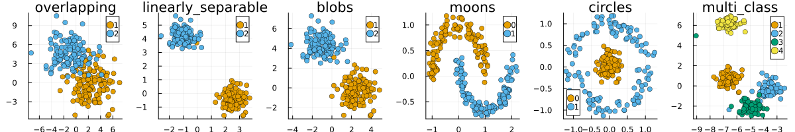

Data Catalogue
To allow researchers and practitioners to test and compare counterfactual generators, the TAIJA environment includes the package TaijaData.jl which comes with pre-processed synthetic and real-world benchmark datasets from different domains. This page explains how to use TaijaData.jl in tandem with CounterfactualExplanations.jl.
Synthetic Data
The following dictionary can be used to inspect the available methods to generate synthetic datasets where the key indicates the name of the data and the value is the corresponding method:
TaijaData.data_catalogue[:synthetic]Dict{Symbol, Function} with 6 entries:
:overlapping => load_overlapping
:linearly_separable => load_linearly_separable
:blobs => load_blobs
:moons => load_moons
:circles => load_circles
:multi_class => load_multi_classThe chart below shows the generated data using default parameters:
plts = []
_height = 200
_n = length(keys(data_catalogue[:synthetic]))
for (key, fun) in data_catalogue[:synthetic]
data = fun()
counterfactual_data = DataPreprocessing.CounterfactualData(data...)
plt = plot()
scatter!(counterfactual_data, title=key)
plts = [plts..., plt]
end
plot(plts..., size=(_n * _height, _height), layout=(1, _n))
Real-World Data
As for real-world data, the same dictionary can be used to inspect the available data from different domains.
TaijaData.data_catalogue[:tabular]Dict{Symbol, Function} with 5 entries:
:german_credit => load_german_credit
:california_housing => load_california_housing
:credit_default => load_credit_default
:adult => load_uci_adult
:gmsc => load_gmscTaijaData.data_catalogue[:vision]Dict{Symbol, Function} with 3 entries:
:fashion_mnist => load_fashion_mnist
:mnist => load_mnist
:cifar_10 => load_cifar_10Loading Data
To load or generate any of the datasets listed above, you can just use the corresponding method, for example:
data = TaijaData.load_linearly_separable()
counterfactual_data = DataPreprocessing.CounterfactualData(data...)Optionally, you can specify how many samples you want to generate like so:
n = 100
data = TaijaData.load_overlapping(n)
counterfactual_data = DataPreprocessing.CounterfactualData(data...)This also applies to real-world datasets, which by default are loaded in their entirety. If n is supplied, the dataset will be randomly undersampled:
data = TaijaData.load_mnist(n)
counterfactual_data = DataPreprocessing.CounterfactualData(data...)The undersampled dataset is automatically balanced:
sum(counterfactual_data.y; dims=2)10×1 Matrix{Int64}:
10
10
10
10
10
10
10
10
10
10We can also use a helper function to split the data into train and test sets:
train_data, test_data =
CounterfactualExplanations.DataPreprocessing.train_test_split(counterfactual_data)